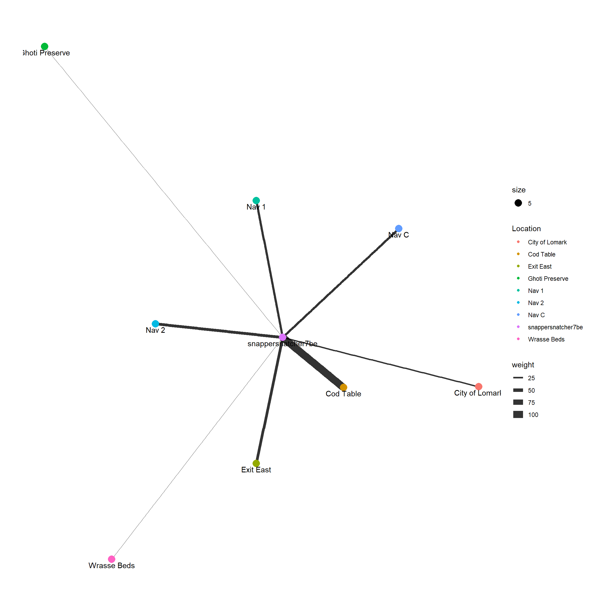
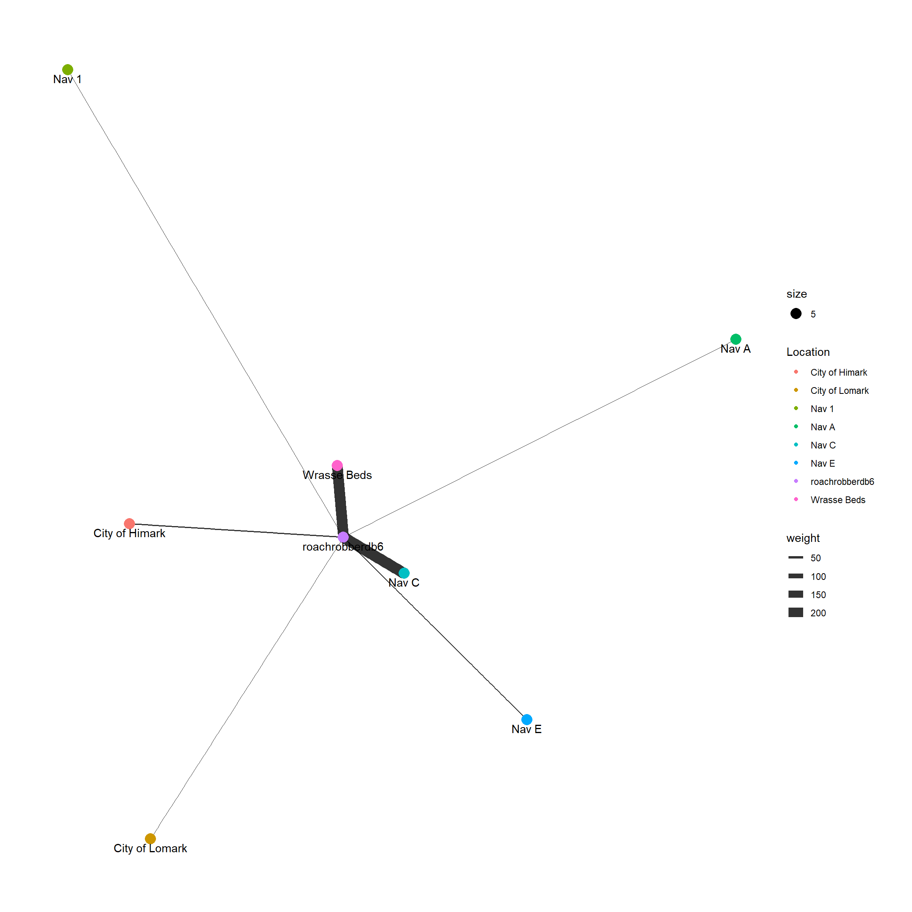
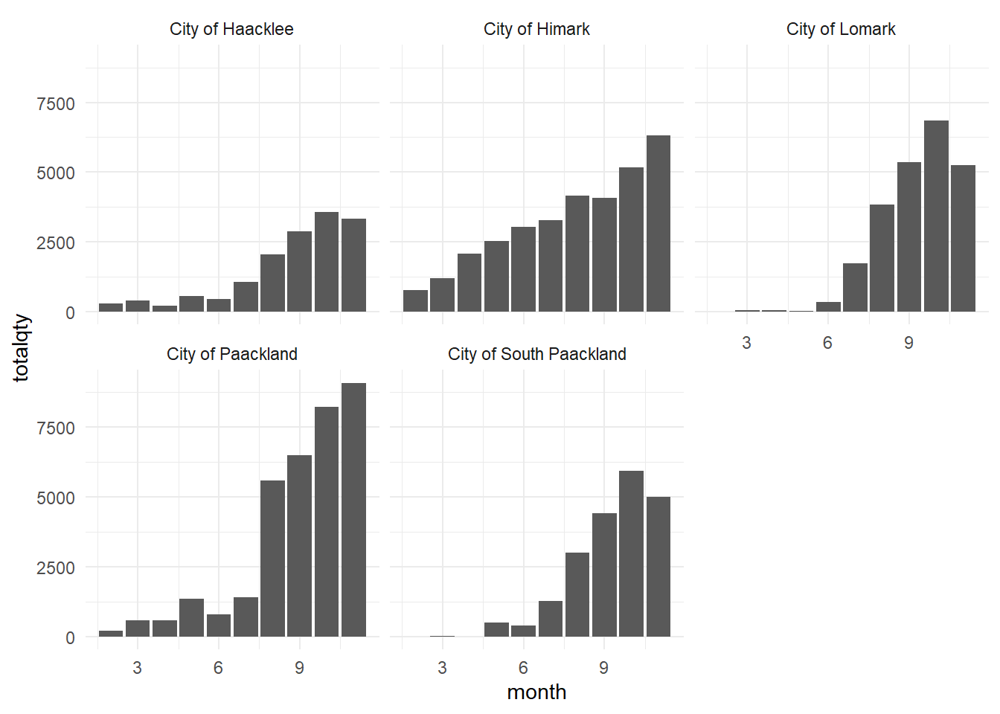

Show the code
pacman::p_load(jsonlite, tidygraph, ggraph, igraph,
visNetwork, graphlayouts, tidyverse, sf, leaflet, plotly, gganimate,
gifski)See link below for additional details on this challenge!
In Oceanus, the routine life of islanders is defined by the movements of commercial fishing vessels, which usually indicate a healthy economy. However, this routine was disrupted when SouthSeafood Express Corp was caught fishing illegally, causing a significant scandal in the fishing community. FishEye International, a non-profit dedicated to combating illegal fishing, is collecting and analyzing data on ship movements and shipping records to understand this disruption better. They have compiled this data into CatchNet: the Oceanus Knowledge Graph. FishEye’s analysts need assistance in creating analytical capabilities to make sense of this data and better understand local commercial fishing behavior.
This study aims to use visual analytics to understand patterns of groups in the knowledge graph. This will endeavour to:
Let’s install the required packages for addressing the challenges.
pacman::p_load(jsonlite, tidygraph, ggraph, igraph,
visNetwork, graphlayouts, tidyverse, sf, leaflet, plotly, gganimate,
gifski)Let’s import the data given for the challenges
mc2_data <- fromJSON("data/MC2.json")
geog <- st_read("data/Oceanus Geography.geojson")Reading layer `Oceanus Geography' from data source
`C:\sarthakjn1\ISSS608-VAA\Take-home_Ex\Take-home_Ex03\data\Oceanus Geography.geojson'
using driver `GeoJSON'
Simple feature collection with 29 features and 7 fields
Geometry type: GEOMETRY
Dimension: XY
Bounding box: xmin: -167.0654 ymin: 38.07452 xmax: -163.2723 ymax: 40.67775
Geodetic CRS: WGS 84First we have the data from the Transponder pings. Let us isolate out that data so that we can use it in the future as and when required.
mc2_ping <-
as_tibble(mc2_data$links) %>%
distinct() %>%
mutate(source =
as.character(source),
target=
as.character(target),
type = as.character(type),
time = as.character(time),
arrivaldate = as.character(as.Date(time, format = "%Y-%m-%dT%H:%M:%S"))
) %>%
filter((source != target) & type == 'Event.TransportEvent.TransponderPing') %>%
select(source, target, type, time, dwell, arrivaldate)Next, let us prepare the data for visualizing the pings of SouthSeaFood Corp Vessels. They are snappersnatcher7be and roachrobberdb6. Here we should be able to identify some suspicious behaviour.
mc2ping_nodes <- mc2_data$nodes
mc2ping_nodes <- mc2ping_nodes %>% filter(type == 'Entity.Location.Region' | type =='Entity.Location.City' | type == 'Entity.Location.Point' | id == 'snappersnatcher7be' | id == 'roachrobberdb6') %>% rename(Location = id)
mc2ping_nodes <- mc2ping_nodes %>% mutate(id = seq_len(nrow(mc2ping_nodes)))
mc2ping_edges <- mc2_ping %>%
group_by(source, target) %>%
summarise(weight = n()) %>%
filter(source!=target) %>%
filter(target == "snappersnatcher7be") %>%
filter(weight > 1) %>%
ungroup()
mc2ping_edges_agg <- mc2ping_edges %>%
left_join(mc2ping_nodes, by= c("source" = "Location")) %>%
rename(from = id) %>%
left_join(mc2ping_nodes, by= c("target" = "Location")) %>%
rename(to = id)
snappergraph <- tbl_graph(nodes = mc2ping_nodes,
edges = mc2ping_edges_agg,
directed = TRUE)
snappergraph <- snappergraph %>%
activate(nodes) %>%
filter(!node_is_isolated())
g <- snappergraph %>%
ggraph(layout = "nicely") +
geom_edge_link(aes(width=weight),
alpha=0.8) +
scale_edge_width(range = c(0.1,5)) +
geom_node_point(aes(colour = Location, size = 5)) +
geom_node_text(aes(label = Location), vjust = 1.5)
g + theme_graph()
mc2ping_roach_edges <- mc2_ping %>%
group_by(source, target) %>%
summarise(weight = n()) %>%
filter(source!=target) %>%
filter(target == "roachrobberdb6") %>%
filter(weight > 1) %>%
ungroup()
mc2ping_roach_edges_agg <- mc2ping_roach_edges %>%
left_join(mc2ping_nodes, by= c("source" = "Location")) %>%
rename(from = id) %>%
left_join(mc2ping_nodes, by= c("target" = "Location")) %>%
rename(to = id)
roachrobbergraph <- tbl_graph(nodes = mc2ping_nodes,
edges = mc2ping_roach_edges_agg,
directed = TRUE)
roachrobbergraph <- roachrobbergraph %>%
activate(nodes) %>%
filter(!node_is_isolated())
g <- roachrobbergraph %>%
ggraph(layout = "nicely") +
geom_edge_link(aes(width=weight),
alpha=0.8) +
scale_edge_width(range = c(0.1,5)) +
geom_node_point(aes(colour = Location, size = 5)) +
geom_node_text(aes(label = Location), vjust = 1.5)
g + theme_graph()
centroids <- st_centroid(geog)
geog$centroid_x <- st_coordinates(centroids)[, 1]
geog$centroid_y <- st_coordinates(centroids)[, 2]
mc2_vessel_mov <- mc2_ping %>%
left_join(geog,
by = c("source" = "Name"))
vessel_movement_sf <- mc2_vessel_mov %>%
filter(!is.na(centroid_x) & !is.na(centroid_y)) %>%
st_as_sf(coords = c("centroid_x", "centroid_y"), crs = 4326)
vessel_movement_sf <- vessel_movement_sf %>%
arrange(target, time)geog2 <- st_read("data/Oceanus Geography.geojson")Reading layer `Oceanus Geography' from data source
`C:\sarthakjn1\ISSS608-VAA\Take-home_Ex\Take-home_Ex03\data\Oceanus Geography.geojson'
using driver `GeoJSON'
Simple feature collection with 29 features and 7 fields
Geometry type: GEOMETRY
Dimension: XY
Bounding box: xmin: -167.0654 ymin: 38.07452 xmax: -163.2723 ymax: 40.67775
Geodetic CRS: WGS 84geog2 <- st_centroid(geog2)
vessel_trajectory <- vessel_movement_sf %>%
group_by(target) %>%
summarize(do_union = FALSE) %>%
st_cast("LINESTRING")
vessel_trajectory_selected <- vessel_trajectory %>%
filter(target == "snappersnatcher7be")
ggplot(data = geog2) +
geom_sf(data = geog2) +
geom_sf(data = vessel_trajectory_selected,
aes(color = factor(target)),
size = 1) +
geom_sf_text(aes(label = Name, geometry = geometry), size = 3, color = "black") +
theme_minimal() +
labs(title = "Trajectories of snappersnacther7be",
x = "Longitude", y = "Latitude", color = "ID")vessel_trajectory_selected <- vessel_trajectory %>%
filter(target == "roachrobberdb6")
p <- ggplot(data = geog2) +
geom_sf(aes(geometry = geometry)) +
geom_sf_text(aes(label = Name, geometry = geometry), size = 3, color = "black") +
geom_sf(data = vessel_trajectory_selected,
aes(color = factor(target)),
size = 1) +
theme_minimal() +
labs(title = "Trajectories of roachrobberdb6",
x = "Longitude", y = "Latitude", color = "ID")
pmc2_nodes <- as_tibble(mc2_data$nodes) %>%
mutate(name = as.character(name),
id = as.character(id),
type = as.character(type),
date = as.character(as.Date(date)),
qty = as.character(as.double(qty_tons),
company = as.character(company)
)) %>%
select(id, name, type, date, qty, company)
mc2_transaction <-
as_tibble(mc2_data$links) %>%
distinct() %>%
mutate(source =
as.character(source),
target=
as.character(target),
type = as.character(type),
date = as.character(date)
) %>%
group_by(source, target, type) %>%
filter((source != target) & type == 'Event.Transaction') %>%
select(source, target, type, date)
mc2_deliveryreport <- mc2_nodes %>% filter(type == 'Entity.Document.DeliveryReport')
mc2_fish <- mc2_nodes %>% filter(type == 'Entity.Commodity.Fish')
mc2_loc <- mc2_nodes %>% filter(type == 'Entity.Location.City')
mc2_transaction_loc <- inner_join(mc2_loc, mc2_transaction, by = c("id" = "target"))
mc2_transaction_fish <- inner_join(mc2_fish, mc2_transaction, by = c("id" = "target"))
mc2_transaction_loc <- inner_join(mc2_transaction_fish, mc2_transaction_loc, by = c("source" = "source"))
mc2_transaction_loc <- inner_join(mc2_transaction_loc, mc2_deliveryreport, by = c("source" = "id"))
mc2_transaction_loc <- mc2_transaction_loc %>%
mutate(suspect_arrival = as.character(as.Date(date,format = "%Y-%m-%d") - 1),
suspect_arrival2 = as.character(as.Date(date,format = "%Y-%m-%d")),
month = month(date))mc2_vessels <- mc2_nodes %>% filter(type == 'Entity.Vessel.CargoVessel' |
type == 'Entity.Vessel.Ferry.Cargo' |
type == 'Entity.Vessel.FishingVessel' |
type == 'Entity.Vessel.Research' |
type == 'Entity.Vessel.Tour' |
type == 'Entity.Vessel.Other')
mc2_vessels_ping <- mc2_vessels %>%
inner_join(mc2_ping, by = c("id" = "target"))
mc2_vessels_ping <- mc2_vessels_ping %>%
mutate(month = month(arrivaldate))
mc2_southsea_pings <- mc2_vessels_ping %>% filter(company == 'SouthSeafood Express Corp')
mc2_southsea_calls <- mc2_southsea_pings %>%
group_by(id, month) %>%
summarise(totalcalls = n()) %>%
select(id, month, totalcalls)
ggplot(data = mc2_southsea_calls,
aes(x = month, y = totalcalls, fill = id)) +
geom_bar(stat = "identity") +
theme_minimal()Prepare the data for region-wise calls for SouthSeaFood Corp Vessels.
mc2_southsea <- inner_join(mc2_southsea_pings, geog,
by = c("source" = "Name"))
mc2_southsea_illegalact <- mc2_southsea %>% filter((X.Kind != 'city') &
(X.Kind != 'Fishing Ground') )
mc2_southsea_susp_calls <- mc2_southsea %>%
group_by(id, month, source) %>%
summarise(totalcalls = n()) %>%
select(id, month, source, totalcalls)ggplot(data = mc2_southsea_susp_calls,
aes(x = month, y = totalcalls, fill = id)) +
facet_wrap(~ source) +
geom_bar(stat = "identity") +
theme_minimal()
From this initial analysis of Snappersnatcher7be, we find that it is pinging Ghoti Preserve and spending a considerable amount of time there. This is suspicious because Ghoti Preserve is an ecological preserve and fishing here is illegal.
Following a similar line of thought, let us identify the fishing vessels that spent a considerable amount of time at ecological preserves indicating that they might be possibly engaged in illegal fishing.
mc2ping_nemo_nodes <- mc2_data$nodes %>% filter(id == 'Nemo Reef' | type == 'Entity.Vessel.FishingVessel') %>% rename(Location = id)
mc2ping_nemo_nodes <- mc2ping_nemo_nodes %>% mutate(id = seq_len(nrow(mc2ping_nemo_nodes)))
mc2ping_nemo_edges <- mc2_ping %>%
group_by(source, target) %>%
summarise(weight = max(dwell)) %>%
filter(source!=target) %>%
filter(source == "Nemo Reef") %>%
filter(weight > 200000) %>%
ungroup()
mc2ping_nemo_edges_agg <- mc2ping_nemo_edges %>%
inner_join(mc2ping_nemo_nodes, by= c("source" = "Location")) %>%
rename(from = id) %>%
inner_join(mc2ping_nemo_nodes, by= c("target" = "Location")) %>%
rename(to = id)
nemograph <- tbl_graph(nodes = mc2ping_nemo_nodes,
edges = mc2ping_nemo_edges_agg,
directed = TRUE)
nemograph <- nemograph %>%
activate(nodes) %>%
filter(!node_is_isolated())
g <- nemograph %>%
ggraph(layout = "nicely") +
geom_edge_link(aes(width=weight),
alpha=0.8) +
scale_edge_width(range = c(0.1,5)) +
geom_node_point(aes(colour = company, size = 5)) +
geom_node_text(aes(label = Location), vjust = 2)
g + theme_graph()mc2ping_ghoti <- mc2_data$nodes %>% filter(id == 'Ghoti Preserve' | type == 'Entity.Vessel.FishingVessel') %>% rename(Location = id)
mc2ping_ghoti_nodes <- mc2ping_ghoti %>% mutate(id = seq_len(nrow(mc2ping_ghoti)))
mc2ping_edges <- mc2_ping %>%
group_by(source, target) %>%
summarise(weight = max(dwell)) %>%
filter(source!=target) %>%
filter(source == "Ghoti Preserve") %>%
filter(weight > 200000) %>%
ungroup()
mc2ping_ghoti_edges_agg <- mc2ping_edges %>%
inner_join(mc2ping_ghoti_nodes, by= c("source" = "Location")) %>%
rename(from = id) %>%
inner_join(mc2ping_ghoti_nodes, by= c("target" = "Location")) %>%
rename(to = id)
ghotigraph <- tbl_graph(nodes = mc2ping_ghoti_nodes,
edges = mc2ping_ghoti_edges_agg,
directed = TRUE)
ghotigraph <- ghotigraph %>%
activate(nodes) %>%
filter(!node_is_isolated())
g <- ghotigraph %>%
ggraph(layout = "nicely") +
geom_edge_link(aes(width=weight),
alpha=0.8) +
scale_edge_width(range = c(0.1,5)) +
geom_node_point(aes(colour = company, size = 5)) +
geom_node_text(aes(label = Location), vjust = 1.5)
g + theme_graph()
mc2_nodes <- as_tibble(mc2_data$nodes) %>%
mutate(name = as.character(name),
id = as.character(id),
type = as.character(type),
date = as.character(as.Date(date)),
qty = as.character(as.double(qty_tons),
company = as.character(company)
)) %>%
select(id, name, type, date, qty, company)
mc2_transaction <-
as_tibble(mc2_data$links) %>%
distinct() %>%
mutate(source =
as.character(source),
target=
as.character(target),
type = as.character(type),
date = as.character(date)
) %>%
group_by(source, target, type) %>%
filter((source != target) & type == 'Event.Transaction') %>%
select(source, target, type, date)mc2_deliveryreport <- mc2_nodes %>% filter(type == 'Entity.Document.DeliveryReport')
mc2_fish <- mc2_nodes %>% filter(type == 'Entity.Commodity.Fish')
mc2_loc <- mc2_nodes %>% filter(type == 'Entity.Location.City')
mc2_transaction_loc <- inner_join(mc2_loc, mc2_transaction, by = c("id" = "target"))
mc2_transaction_fish <- inner_join(mc2_fish, mc2_transaction, by = c("id" = "target"))
mc2_transaction_loc <- inner_join(mc2_transaction_fish, mc2_transaction_loc, by = c("source" = "source"))
mc2_transaction_loc <- inner_join(mc2_transaction_loc, mc2_deliveryreport, by = c("source" = "id"))
mc2_transaction_loc <- mc2_transaction_loc %>%
mutate(suspect_arrival = as.character(as.Date(date,format = "%Y-%m-%d") - 1),
suspect_arrival2 = as.character(as.Date(date,format = "%Y-%m-%d")),
month = month(date))mc2_portoffloadtotal <- mc2_transaction_loc %>%
group_by(month, id.y) %>%
summarize(totalqty = sum(as.double(qty)),
totalcalls = n()) %>%
select(id.y, month, totalqty, totalcalls)
mc2_portoffload <- mc2_transaction_loc %>%
group_by(month, id.y, name.x) %>%
summarize(totalqty = sum(as.double(qty)),
totalcalls = n()) %>%
select(id.y, name.x, month, totalqty, totalcalls)mc2_transaction_loc <- mc2_transaction_loc %>% mutate(qty = as.double(qty))
# Calculate median
median_value <- median(mc2_transaction_loc$qty)
# Calculate Q3 and IQR
Q3 <- quantile(mc2_transaction_loc$qty, 0.75)
IQR <- IQR(mc2_transaction_loc$qty)
upper_whisker <- Q3 + 1.5 * IQR
ggplot(mc2_transaction_loc, aes(x = as.double(qty))) +
geom_histogram(binwidth = 5, fill = "blue", color = "black", alpha = 0.7) +
geom_vline(aes(xintercept = median_value), linetype = "dotted", color = "red", size = 1) +
geom_vline(aes(xintercept = upper_whisker), linetype = "dotted", color = "red", size = 1) +
labs(title = "Histogram of Cargo offload transactions", x = "Quantity", y = "Frequency") +
annotate("text", x = median_value, y = Inf, label = paste("Median:", round(median_value, 2)), vjust = 1, color = "red") +
annotate("text", x = upper_whisker, y = Inf, label = paste("Upper Whisker:", round(upper_whisker, 2)), vjust = 1, color = "red") +
theme_minimal()
ggplot(data = mc2_portoffloadtotal,
aes(x = month, y = totalqty)) +
facet_wrap(~id.y) +
geom_bar(stat = "identity") +
theme_minimal()ggplot(data = mc2_portoffload,
aes(x = month, y = totalqty, fill = name.x)) +
facet_wrap(~id.y) +
geom_bar(stat="identity") +
theme_minimal()
mc2_cargovessels <- mc2_data$nodes %>% filter(type == "Entity.Vessel.CargoVessel" | type == "Entity.Vessel.Ferry.Cargo")
mc2_cargoping <- inner_join(mc2_ping, mc2_cargovessels)mc2_ping_transaction_loc <- right_join(mc2_cargoping, mc2_transaction_loc, by = c("source" = "id.y", "arrivaldate" = "suspect_arrival"))
mc2_ping_transaction_loc <- mc2_ping_transaction_loc %>% filter(dwell != 0.000)#mc2_ping_transaction_loc2 <- right_join(mc2_cargoping, mc2_transaction_loc, by = c("source" = "id.y", "arrivaldate" = "suspect_arrival2"))
#mc2_ping_transaction_loc2 <- mc2_ping_transaction_loc2 %>% filter(dwell != 0.000)#finaljoin <- rbind(mc2_ping_transaction_loc, mc2_ping_transaction_loc2)#write.csv(mc2_cargoping, 'ping.csv')
#write.csv(finaljoin, 'transactionping.csv')mc2_vessels <- mc2_nodes %>% filter(type == 'Entity.Vessel.CargoVessel' |
type == 'Entity.Vessel.Ferry.Cargo' |
type == 'Entity.Vessel.FishingVessel' |
type == 'Entity.Vessel.Research' |
type == 'Entity.Vessel.Tour' |
type == 'Entity.Vessel.Other')
mc2_vessels_ping <- mc2_vessels %>%
inner_join(mc2_ping, by = c("id" = "target"))
mc2_vessels_ping <- mc2_vessels_ping %>%
mutate(month = month(arrivaldate))
mc2_southsea_pings <- mc2_vessels_ping %>% filter(company == 'SouthSeafood Express Corp')
mc2_southsea_calls <- mc2_southsea_pings %>%
group_by(id, month) %>%
summarise(totalcalls = n()) %>%
select(id, month, totalcalls)
ggplot(data = mc2_southsea_calls,
aes(x = month, y = totalcalls, fill = id)) +
geom_bar(stat = "identity") +
theme_minimal()
Prepare the data for region-wise calls for SouthSeaFood Corp Vessels.
mc2_southsea <- inner_join(mc2_southsea_pings, geog,
by = c("source" = "Name"))
mc2_southsea_illegalact <- mc2_southsea %>% filter((X.Kind != 'city') &
(X.Kind != 'Fishing Ground') )
mc2_southsea_susp_calls <- mc2_southsea %>%
group_by(id, month, source) %>%
summarise(totalcalls = n()) %>%
select(id, month, source, totalcalls)